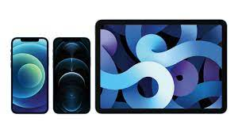

Apple products
Apple Inc. (formerly Apple Computer Inc.) is an American computer and consumer electronics company famous for creating the iPhone, iPad and Macintosh computers. Apple is one of the largest companies globally with a market cap of over 2 trillion dollars.
Apple devices are renowned for their design aesthetic and attention to detail. Tight integration between hardware and software gives their systems a performance advantage over competitor systems with similar specifications.
Apple rose to its position as a market leader by correctly positioning its products. They didn't invent personal computers, graphical user interfaces (GUIs), mp3 players, smartphones, smartwatches or tablets. Instead, they produced some of the first versions of these products that were refined, easy to use and well-designed, which led to wide market adoption.
Apple product lines
Apple offers numerous products and services. A few of its major offerings today include:
Mac computer. The Macintosh, or Mac, is Apple's line of personal computers. Its main product types are the iMac all-in-one desktop, Mac mini standard desktop, Mac Studio media-focused desktop, Mac Pro professional production workstation desktop, MacBook Air consumer laptop and MacBook Pro professional laptop.

All Mac computers use the macOS operating system. Since 2020, they use the "M" series CPUs designed by Apple based on ARM architecture. These chips have been praised for their excellent performance and power efficiency. Mac computers are popular with students and creative professionals for their elevated style and ease of use. Computer programmers might also use them because the underlying operating system is based on Unix and is POSIX compatible. Due to the lack of built-in central management and high cost, Mac computers have historically been unpopular in the workplace. Still, the introduction of Zero Trust, BYOD and third-party tools such as Jamf have begun to make them more acceptable to IT administrators.
iPhone and iPad. The iPhone is Apple's smartphone line, and the iPad is its tablet. The iPhone was the first smartphone to receive mass market adoption due to its ease of use, built-in app store and capacitive multitouch touchscreen. The iPhone uses the "A" series mobile CPU, and recent iPads use the same "M" series CPUs as Mac computers. Their operating systems iOS and iPadOS, are based on the same Unix kernel as macOS but have a touch-focused interface.
Consumer products. Apple has several smaller product lines that integrate with its overall ecosystem. The Apple Watch is a smartwatch and fitness tracker. Apple TV is a television set-top box and streaming media device. HomePod is a smart speaker and home assistant.
Services. Apple also provides several services that seamlessly work with its products. Apple iCloud is a personal file storage and synchronization service. Apple Pay is a money payment system and a credit card provider. Apple TV+ is a media streaming service with movies and TV programming. Apple also provides other media under the iTunes store, Apple Music, Apple Books and other services. IMessage is an Apple device-specific instant messaging service that extends SMS for iPhones.
